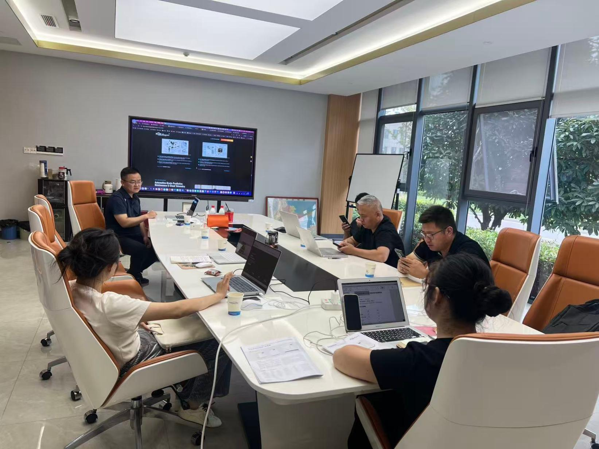
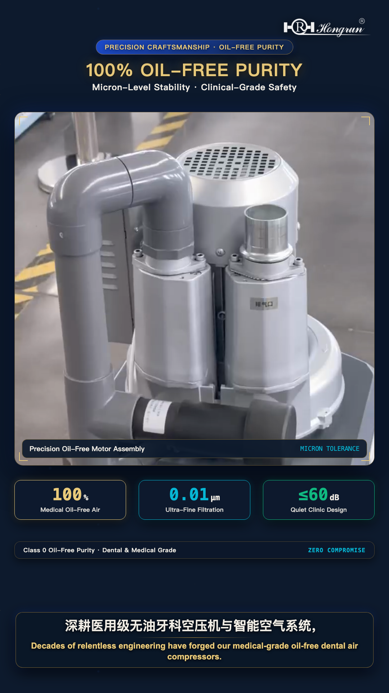
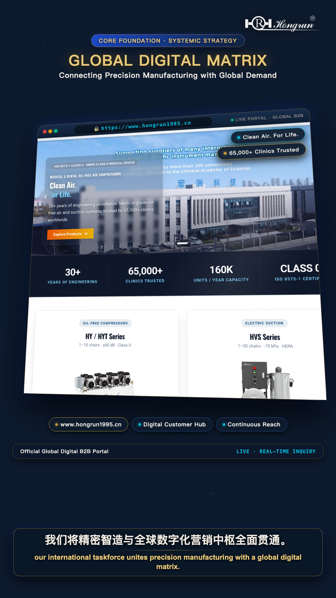
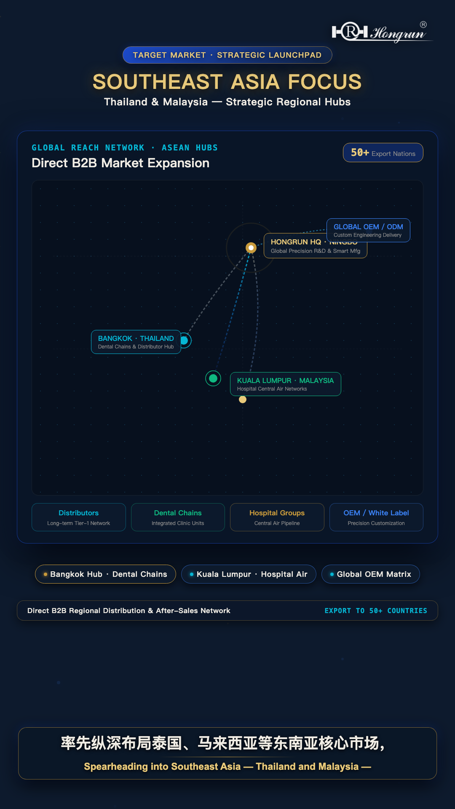
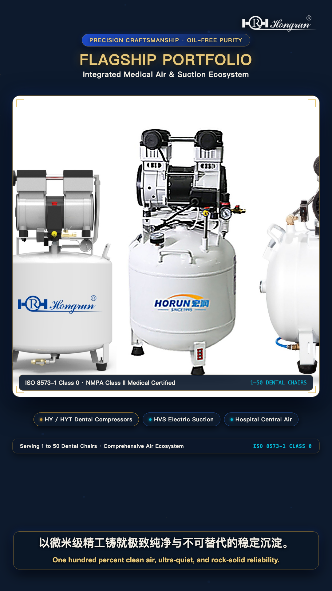
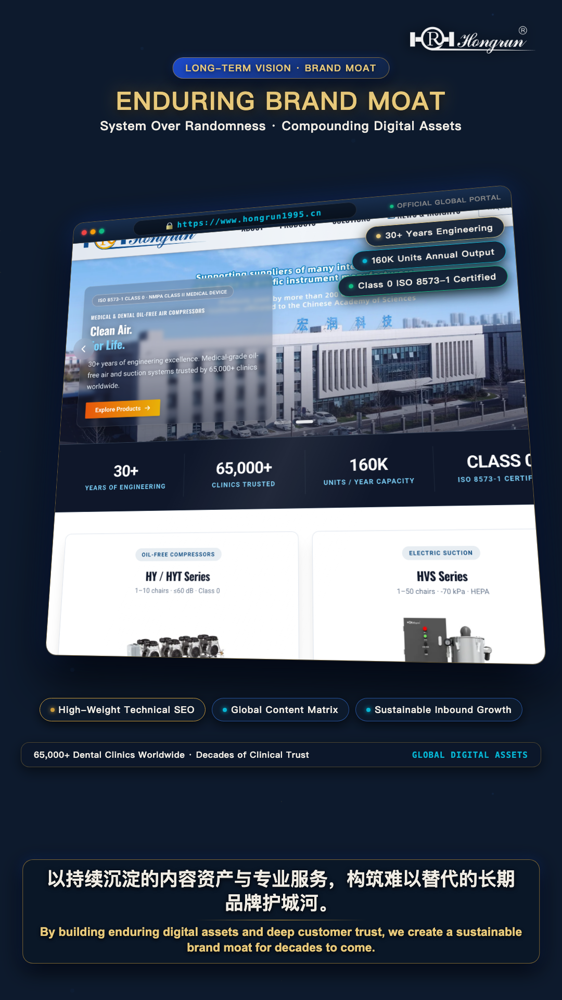
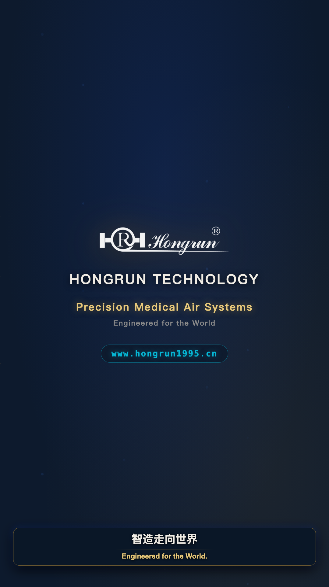

01 The Fragmentation Trap: Why Opportunistic Selling Fails in Global Healthcare
For decades, the conventional playbook for industrial export in emerging manufacturing hubs followed a predictable, fragmented pattern: rent a booth at one or two annual international medical expos, collect a handful of business cards, and passively await low-margin price-checking RFQs from transactional traders. While this opportunistic model might suffice for commoditized consumables, in the mission-critical sector of medical-grade clean compressed air and clinical suction systems, it has reached a complete dead end.

As Martin Chen, Chief Marketing Director (CMD) of Hongrun Technology, emphasized during our international operational review: "Overseas procurement executives—particularly medical directors of European hospital groups, Southeast Asian healthcare chains, and Tier-1 dental distributors—are not looking for the cheapest pump head. What keeps them awake at night is operational uncertainty." Small trading intermediaries cannot furnish accredited technical validation; they cannot prove a 20,000-hour maintenance-free service life; and they lack standardized bilingual engineering documentation and digital traceability.
When an uncertified air compressor discharges trace hydrocarbon vapor or line condensation into clinical gas piping, the consequences are disastrous: ceramic ball bearings in $1,000 dental handpieces seize instantly, composite bonding resin shear strength drops by 35% to 60%, and operating room pneumatic surgical instruments face catastrophic mid-procedure stalling. The resulting clinical downtime and liability dwarf any marginal upfront savings. Breaking this cycle requires abandoning reactive transactional sales and replacing them with Systemic Precision.
02 30 Years of Engineering Rigor: The Non-Negotiable Hardware Moat
Systemic precision cannot be simulated by marketing rhetoric; it must be anchored in physical manufacturing capability. Founded in November 1995, Hongrun Technology has focused exclusively on oil-free pneumatic engineering for over 30 years. Spanning a 20,000 m² specialized manufacturing campus with an annual capacity exceeding 160,000 units, Hongrun serves over 65,000 medical and dental facilities and more than 190 leading university research laboratories worldwide.


Our technical moat is built upon four non-negotiable engineering principles:
-
Tier-1 Research Pedigree (Chinese Academy of Sciences): For decades, Hongrun has engineered precision clean air supplies for nuclear magnetic resonance (NMR), gas chromatography-mass spectrometry (GC-MS), and laser optics. This rigorous scientific standard is applied to every clinical compressor we build.
-
Advanced Tribology & Saint-Gobain Composite Seals: Piston rings are fabricated from proprietary French Saint-Gobain diamond-embedded PTFE composite. Operating without a single drop of lubricating oil, they achieve continuous wear resistance across a certified 20,000-hour service life.
-
German DMG MORI 5-Axis CNC Machining: Crankcases, connecting rods, and eccentric shafts are machined in single-clamping operations. Cylinder bore roundness is held within 3 microns, with an internal mirror surface finish of Ra ≤ 0.2 μm, minimizing mechanical friction and thermal build-up.
-
Antibacterial Air Receiver Metallurgy: Pressure vessels are treated with an internal 220°C thermoset nano-silver ion coating, halting internal rust and microbial colonization even during prolonged high-humidity shutdowns.
03 The Southeast Asia Blueprint: Conquering Tropical Humidity with N+1 Redundancy
Rather than attempting an unfocused, scattershot global marketing campaign, Hongrun's 2026 expansion strategy prioritizes targeted regional spearheads. Southeast Asia—headlined by Thailand and Malaysia—serves as our frontline operational theater. Both nations boast rapidly modernizing healthcare infrastructures and surging dental tourism, but present extreme environmental challenges: ambient temperatures exceeding 38°C and relative humidity persistently above 85% RH.


In high-humidity equatorial climates, standard industrial compressors flood air lines with condensed moisture, blinding optical handpieces and fostering biofilm in dental unit waterlines (DUWL). To overcome this, Hongrun delivers customized, tropicalized pneumatic solutions:
Tropical Healthcare Engineering Protocol
1. Dual-Tower PSA Desiccant Drying (-40°C PDP): Replacing ineffective refrigerated air dryers with high-adsorption 13X synthetic molecular sieve towers, guaranteeing ISO 8573-1 Class 2 moisture purity (-40°C pressure dew point) regardless of exterior tropical humidity.
2. N+1 Dual-Pump Redundancy Architecture: For 4-to-8 chair clinics in Bangkok and Kuala Lumpur, our flagship HYTG-300 (90L) dual-pump station provides alternating soft-start logic. If one pump enters routine maintenance, the secondary pump carries 100% of the surgical load without a second of clinic downtime.
04 The Digital Operations Matrix: Building an Unassailable Brand Moat
International B2B procurement has fundamentally changed. Today's overseas hospital engineering directors, biomedical equipment procurement officers, and dental supply executives research solutions online long before initiating contact. They evaluate engineering whitepapers, verify CAD schematics, and consult AI research engines like ChatGPT, Claude, and Perplexity.


To lead in this new era, Hongrun has built an integrated Digital Operations Matrix centered on www.hongrun1995.cn:
WebMCP AI Protocol
Registered with W3C WebMCP standards, enabling autonomous AI agents to query certified flow rates, acoustic curves, and CAD data directly.
Interactive Sizing Widget
Our proprietary algorithm computes simultaneous flow (Q = N × 50 × f) and pipe friction loss in real time, preventing under-sizing.
11 Deep Whitepapers
From 3D CAD exploded views to clinic room acoustic damping, our open knowledge library establishes authoritative domain expertise.
05 The 6-Scene Cinematic Storyboard & Engineering Narrative
The official corporate film featured at the top of this playbook is structured into six precise technical scenes, balancing cinematic visual quality with rigorous engineering facts:
| Scene & Timestamp | Visual Execution | Bilingual Script & Voiceover | Core Strategic Takeaway |
|---|---|---|---|
| Scene 1 00:00 - 00:08 |
Atmospheric medical clinic & digital matrix typography |
"In global healthcare, fragmented sales can no longer break through." 在全球医疗竞争的浪潮中，零散试探已无法破局。 |
Identifies the fundamental flaw of reactive trading; calls for systemic precision. |
| Scene 2 00:08 - 00:18 |
Historical archive & CAS research instrumentation |
"30 years of engineering. Supporting suppliers to the Chinese Academy of Sciences and 200+ universities." 30年精工沉淀。中科院科研仪器配套，服务200+顶尖高校。 |
Establishes irreplaceable 30-year technical credibility and scientific heritage. |
| Scene 3 00:18 - 00:30 |
5-axis CNC robotic line, pump heads & PTFE seals |
"From core pump heads to customized pneumatic solutions. We build lasting moats with precision." 从核心泵头到整机定制。我们以制造实力构筑不可替代的竞争壁垒。 |
Demonstrates core hardware capability from bare pump blocks to full systems. |
| Scene 4 00:30 - 00:45 |
Southeast Asia geographic animation & clinic installations |
"Spearheading Southeast Asia—Thailand, Malaysia. Direct support for dental clinics and hospital engineering." 深耕东南亚——泰国、马来西亚。直击大型连锁口腔与医院工程需求。 |
Highlights targeted geographical focus and customized tropical engineering. |
| Scene 5 00:45 - 00:58 |
Digital operations center, analytics dashboards & web portal |
"Not just selling machines, but delivering sustainable growth and digital excellence." 不止交付设备，更以数字化全景赋能，打造持续增长引擎。 |
Articulates the digital matrix: whitepapers, IoT telemetry, and AI protocols. |
| Scene 6 00:58 - 01:08 |
Aerial campus view, official URL & contact card |
"Hongrun Technology: Technology First, Quality as Priority. Advancing together with global partners." 宏润科技：科技立身，质量筑基。与全球伙伴，共赢未来。 |
Corporate slogan and direct conversion anchor to www.hongrun1995.cn. |
06 Global Commercial Engagement: How We Support Distributors & OEMs
Sustainable international expansion is a two-way partnership. Hongrun Technology provides overseas distributors, dental equipment supply houses, and hospital engineering contractors with a structured support ecosystem:
Bare Pump Heads & Parts
Direct supply of ZB-100, ZB-200, and 4V series bare pump units for equipment manufacturers integrating oil-free air into specialized dental treatment centers or mobile medical vehicles.
Turnkey Clinic Systems
Exclusive regional distributor rights for HY-series silent cabinet compressors and HVS suction units, supported by bilingual marketing toolkits, CAD sizing models, and factory warranty reserves.
Hospital Central Stations
Engineered scroll stations (HW-series) up to 3,600 L/min for general hospitals, surgical suites, and multi-story stomatology institutes, custom-configured with Siemens PLC and N+1 redundancy.